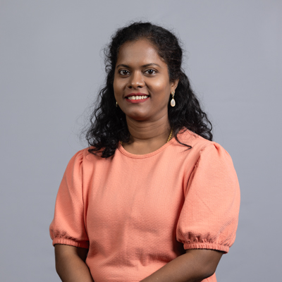

I help teams turn messy operational problems into clear product decisions, delivery plans and measurable outcomes — across healthcare RCM, AI, workflow automation and enterprise platforms.
Each card opens a detailed case study with the problem, my role, key product decisions, evidence and outcomes.
Turning fragmented payer policy content into actionable intelligence, with AI quality, ontology and user feedback tied to the longer-term goal of reducing avoidable denials.
Built the product and operating foundation for scalable RCM automation — workflow discovery, governance, reliability, observability, service enablement and modernization.
Shaping the transition from maintenance-heavy portal automation toward a more adaptable Agentic AI operating model, balancing value, feasibility, reliability and economics.
Used user discovery, ticket analysis and workflow mapping to identify high-impact credential problems and build a phased automation roadmap.
Root cause, user impact, operational constraints and business value.
Scope, MVP, roadmap, acceptance criteria and success metrics.
RACI, risk tracking, release readiness, stakeholder alignment and adoption.
An AI concept focused on reducing onboarding friction for healthcare providers and practices through contextual guidance, assistance and a more transparent onboarding experience.
The concept was subsequently selected as a CodeFest initiative.
Problem discovery, user-centered thinking, concept shaping, stakeholder communication and turning an early idea into an initiative the organization chose to pursue.
I bring product experience across healthcare RCM, enterprise SaaS, automation and AI. My strength is connecting business context, user workflow, technical feasibility and measurable outcomes.
I am strongest where the product sits between complex workflows, technical teams and business stakeholders — especially when the problem is ambiguous and the solution needs to become scalable.
For opportunities across AI, healthcare, enterprise SaaS, platform and technical product management.